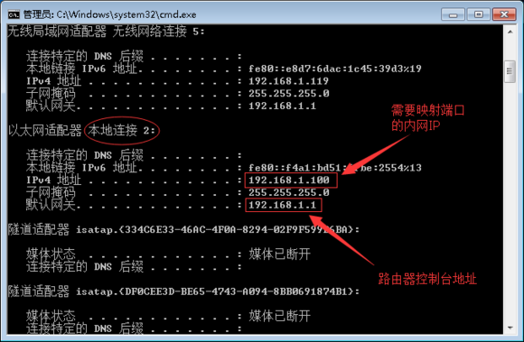
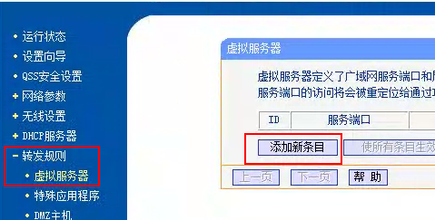
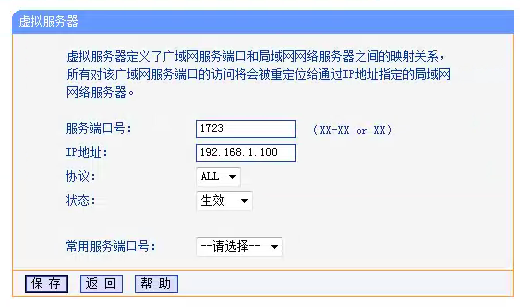
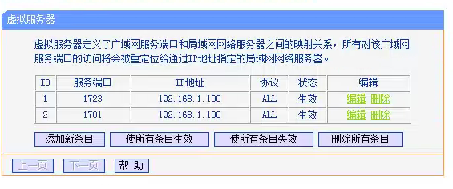

首先打开路由器控制台，如果不知道怎么打开可以点击开始-运行-cmd
输入ipconfig
向上拉，找下一个叫本地连接的(一般叫本地连接)
然后发现默认网关(192.168.1.1)，那就是路由器控制台的地址，同时，我们还要记住ipv4地址(192.168.1.100)，一会用得上

打开浏览器，输入默认网关，也就是刚刚记住的192.168.1.1，并输入密码后打开控制台，如果不知道密码的话，要重置路由器，怎么重置就不说了，自己百度，点击转发规则-虚拟服务器-添加新条目

分别映射1723和1701端口
ip地址，填的是你自己的内网IP，也就是刚刚记录的ipv4
如果看见类似关键字：【内部端口】和【外部端口】，两个写一样的，例如内部端口：1723，外部端口：1723
如果强制需要写一个端口区间，都写一样的，例如：内部端口：1723-1723，外部端口：1723-1723
记住，要映射两个端口，也就是说这个操作要操作两次，只是需要填写的端口不同而已

最后，映射完毕
如果依然无效，可能网络相关原因，只能用L2TP类型，在线路列表里，只能挑选P_L列有个L字的线路